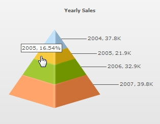
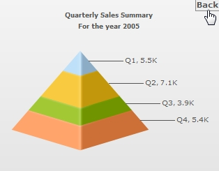
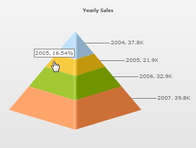
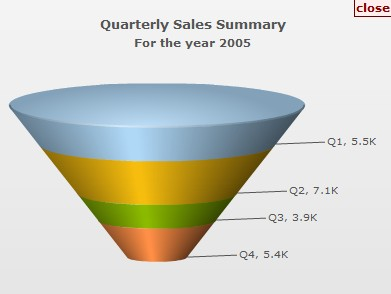

|
LinkedCharts is a new and smart drill-down feature introduced in FusionWidgets XT that allows you to create unlimited level of drill-down charts and gauges using a single data source. All the links originate from a parent chart or gauge and its data, which comprehensively contains data or Data URL for all descendant (child, grand-child) charts or gauges. Upon clicking the data plot items (funnel, pyramid, dial in Angular gauge, pointer in Linear gauge etc.) of the parent chart/gauge or clicking the parent gauge itself, users can drill-down into descendant charts or gauges. The descendant charts or gauges (or children charts or gauges) can either replace the parent chart or gauge with an option to drill-up, or can be opened in new dialogs or frames.
Let's consider a simple scenario with a single level of drill-down. We will build a parent chart that shows yearly sales, which when clicked will show quarterly sales for that year. Let's build the parent chart as a Pyramid chart with four slices (representing four years). LinkedCharts allows you to build these kind of scenarios (and much more complex) without having to write any additional line of code.
To use LinkedCharts, you need to follow these steps:
- First, create the XML/JSON data for parent chart. This is called the parent data source and comprehensively contains Data String or Data URL for all descendant charts.
- Next, append the Data String or Data URL for all the descendant charts (also called child chart) within the parent data source. If Data String method is used, data for each descendant chart is embedded within the parent data source and linked using unique data identifiers.
- You're done. Yes, no additional code is required!
The LinkedChart feature of FusionCharts JavaScript Class will take care of the rest. It does the following:
- It automatically creates and shows a detailed child chart when a data plot item link » (specially defined links using newchart prefix) in the parent chart is clicked
- It clones all chart configuration settings from the parent chart to create the child chart or the LinkedChart
- It also allows you to configure specific properties for the descendant charts » e.g., type of chart, width, height, where the charts will be shown etc. using configureLink() function
- It notifies your code by way of events whenever a link is invoked, link item is opened and link item is closed
- It allows you to drill-down to unlimited numbers of levels
The images below shows how a simple LinkedCharts implementation works (here, we've shown only 1 level of drill-down):
|  |
 |
Main chart with yearly sales data.
Slice of year 2005 is being clicked.
|
LinkedChart with data of 2005 replaces the main chart.
Click on Back overlay button to return to the main chart. |
See it live!
While it was possible to create this using FusionWidgets v3.1 (or previous versions) as well, you had to write additional code and handlers to make this possible. LinkedCharts helps you attain the same without an additional line of code.
In this page, we will learn LinkedCharts by doing the following:
Let's straight jump into code and see how LinkedCharts work. |
HTML
For a very basic implementation, the HTML is exactly same as our first chart, weekly-sales which we created in Creating your first chart section. The HTML is as follows:
<html>
<head>
<title>My First chart using FusionWidgets</title>
<script type="text/javascript" src="Charts/FusionCharts.js">
</script>
</head>
<body>
<div id="chartContainer">FusionWidgets will load here!</div>
<script type="text/javascript"><!--
var myChart = new FusionCharts( "Charts/Pyramid.swf",
"myChartId", "320", "250", "0", "1" );
myChart.setXMLUrl("summary-data.xml");
myChart.render("chartContainer");
// -->
</script>
</body>
</html>
In the above HTML we have created only the parent chart. The chart takes data from an xml file, summary-data.xml. This chart, in junction with LinkedCharts functionality defined in FusionCharts.js, will drive drill-down charts; without you having to write any additional line of code.
XML Data
The XML data is what drives the entire LinkedCharts drill-down functionality. In this example, we will use Data URL method to specify URL of descendant charts. In context of XML data, it is called XML URL method. Given below is the XML data specifying LinkedChart for each slice.
<chart caption="Yearly Sales" xAxisName="Year" yAxisName="Sales">
<set label="2004" value="37800" link="newchart-xmlurl-Data2004.xml"/>
<set label="2005" value="21900" link="newchart-xmlurl-Data2005.xml"/>
<set label="2006" value="32900" link="newchart-xmlurl-Data2006.xml"/>
<set label="2007" value="39800" link="newchart-xmlurl-Data2007.xml"/>
</chart>
{
"chart":{
"caption":"Yearly Sales", "xaxisname":"Year", "yaxisname":"Sales" },
"data":[
{ "label":"2004", "value":"37800", "link":"newchart-jsonurl-Data2004.json" },
{ "label":"2005", "value":"21900", "link":"newchart-jsonurl-Data2005.json" },
{ "label":"2006", "value":"32900", "link":"newchart-jsonurl-Data2006.json" },
{ "label":"2007", "value":"39800", "link":"newchart-jsonurl-Data2007.json" }
]
}
In the above XML we define link attribute for each <set> element. Note how link for each slice is defined as newchart-xmlurl-DataURL. newChart prefix is used to indicate that it must invoke LinkedChart. xmlURL indicates that XML URL method is used to specify data for linked chart; in case of JSON data, jsonurl is used. URL specifies the data path for the linked chart that opens when this slice is clicked.
Note: You can create LinkedCharts using the link attribute of a data plot or the clickURL atttribute of the chart or gauge.
As per the above XML, the data for the child chart which loads when first slice is clicked, is Data2004.xml; Data2005.xml when the second slice is clicked etc. Hence, for 4 slices in this sample there are 4 separate XML files from which the data for the detailed charts will be used. The four XML (and JSON) files are as follows:
<chart caption="Quarterly Sales Summary" subcaption="For the year 2004" xAxisName="Quarter" yAxisName="Sales">
<set label="Q1" value="11700"/>
<set label="Q2" value="8600"/>
<set label="Q3" value="6900"/>
<set label="Q4" value="10600"/>
</chart>
<chart caption="Quarterly Sales Summary" subcaption="For the year 2005" xAxisName="Quarter" yAxisName="Sales">
<set label="Q1" value="5500"/>
<set label="Q2" value="7100"/>
<set label="Q3" value="3900"/>
<set label="Q4" value="5400"/>
</chart>
<chart caption="Quarterly Sales Summary" subcaption="For the year 2006" xAxisName="Quarter" yAxisName="Sales">
<set label="Q1" value="6700"/>
<set label="Q2" value="9200"/>
<set label="Q3" value="10800"/>
<set label="Q4" value="6200"/>
</chart>
<chart caption="Quarterly Sales Summary" subcaption="For the year 2007" xAxisName="Quarter" yAxisName="Sales">
<set label="Q1" value="8900"/>
<set label="Q2" value="6600"/>
<set label="Q3" value="11200"/>
<set label="Q4" value="13100"/>
</chart>
{
"chart":{
"caption":"Quarterly Sales Summary",
"subcaption":"For the year 2004",
"xaxisname":"Quarter",
"yaxisname":"Sales",
"showBorder" : "1"
},
"data":[
{ "label":"Q1", "value":"11700" },
{ "label":"Q2", "value":"8600" },
{ "label":"Q3", "value":"6900" },
{ "label":"Q4", "value":"10600" }
]
}
{
"chart":{
"caption":"Quarterly Sales Summary",
"subcaption":"For the year 2005",
"xaxisname":"Quarter",
"yaxisname":"Sales",
"showBorder" : "1"
},
"data":[
{ "label":"Q1", "value":"5500" },
{ "label":"Q2", "value":"7100" },
{ "label":"Q3", "value":"3900" },
{ "label":"Q4", "value":"5400" }
]
}
{
"chart":{
"caption":"Quarterly Sales Summary",
"subcaption":"For the year 2006",
"xaxisname":"Quarter",
"yaxisname":"Sales",
"showBorder" : "1"
},
"data":[
{ "label":"Q1", "value":"6700" },
{ "label":"Q2", "value":"9200" },
{ "label":"Q3", "value":"10800" },
{ "label":"Q4", "value":"6200" }
]
}
{
"chart":{
"caption":"Quarterly Sales Summary",
"subcaption":"For the year 2007",
"xaxisname":"Quarter",
"yaxisname":"Sales",
"showBorder" : "1"
},
"data":[
{ "label":"Q1", "value":"8900" },
{ "label":"Q2", "value":"6600" },
{ "label":"Q3", "value":"11200" },
{ "label":"Q4", "value":"13100" }
]
}
The page first loads the parent chart, a Pyramid chart with 4 years data. When a slice (year) is clicked the parent chart is replaced by a detailed child chart showing quarterly data for that particular year. There is a Back overlay button at the top right corner of the chart. This button when clicked leads us back to the main chart.
This is a very basic sample in which the parent chart is replaced by the child chart. However, there are a lot of things that you can configure, like the links from JavaScript (using configureLink function) such that the descendant charts get appended to the parent chart's container. You can also make the descendant charts open in a separate container. Using event listeners you can even extend the functionality to open the descendant charts in jQuery dialogs, light-boxes etc. You can also modify various aspects (like size, attribute etc.) of the parent chart as well as the opening descendant chart. Possibilities are endless. We explore some of the possibilities in the coming sections of this page.
Pointers on the XML's link attribute to implement LinkedCharts :
The format of the link attribute's value is : "newchart-dataformat-datasource". Here, newchart- is a constant. The values for dataformat and datasource are as follows:
- dataformat » ( i.e., value after newchart prefix and a hyphen (-) ) is the format in which data for the linked chart is provided. Data format can be of 4 types:
- xmlurl - This defines that the data for the new chart will come from an XML URL. This is automatically loaded by the linked chart.
- jsonurl - This defines that the data for the new chart will come from a JSON URL. This is automatically loaded by the linked chart
- xml - This defines that the data for the new chart will come from XML embedded inside the XML for the parent chart (parent data source)
- json - This defines that the data for the new chart will come from JSON embedded inside the JSON for the parent chart (parent data source)
- datasource » (the rest of the value, after a hyphen (-) again) defines the value for data source (either URL or Data String itself) for the descendant chart as per the dataformat set:
- When xmlurl is set as the dataformat, the datasource value will be a URL of the XML file
- When jsonurl is set as the dataformat, the datasource value will be a URL of the JSON file
- When xml is set as the dataformat, the datasource assumes value of the unique data identifier which refers to data embedded inside <linkeddata> node (that contains data for all descendant charts) in the parent data source for the descendant chart
- When json is set as the dataformat, the datasource assumes value of the unique data identifier which refers to data embedded inside the Array linkeddata (that contains data for all descendant charts) in the parent data source for the descendant chart
|
<chart caption="Yearly sales" xAxisName="Year" yAxisName="Sales">
<set label="2004" value="37800" link="newchart-xml-2004-quarterly" />
<set label="2005" value="21900" link="newchart-xml-2005-quarterly" />
<set label="2006" value="32900" link="newchart-xml-2006-quarterly" />
<set label="2007" value="39800" link="newchart-xml-2007-quarterly" />
<linkeddata id="2004-quarterly">
<chart caption="Quarterly Sales Summary" subcaption="For the year 2004"
xAxisName="Quarter" yAxisName="Sales" >
<set label="Q1" value="11700" />
<set label="Q2" value="8600" />
<set label="Q3" value="6900" />
<set label="Q4" value="10600" />
</chart>
</linkeddata>
<linkeddata id="2005-quarterly">
<chart caption="Quarterly Sales Summary" subcaption="For the year 2005"
xAxisName="Quarter" yAxisName="Sales">
<set label="Q1" value="5500" />
<set label="Q2" value="7100" />
<set label="Q3" value="3900" />
<set label="Q4" value="5400" />
</chart>
</linkeddata>
<linkeddata id="2006-quarterly">
<chart caption="Quarterly Sales Summary" subcaption="For the year 2006"
xAxisName="Quarter" yAxisName="Sales">
<set label="Q1" value="6700" />
<set label="Q2" value="9200" />
<set label="Q3" value="10800" />
<set label="Q4" value="6200" />
</chart>
</linkeddata>
<linkeddata id="2007-quarterly">
<chart caption="Quarterly Sales Summary" subcaption="For the year 2007"
xAxisName="Quarter" yAxisName="Sales">
<set label="Q1" value="8900" />
<set label="Q2" value="6600" />
<set label="Q3" value="11200" />
<set label="Q4" value="13100" />
</chart>
</linkeddata>
</chart>
{
"chart":{
"caption":"Yearly Sales", "xaxisname":"Year", "yaxisname":"Sales" },
"data":[{
"label":"2004", "value":"37800", "link":"newchart-json-2004-quarterly"
},
{
"label":"2005","value":"21900", "link":"newchart-json-2005-quarterly"
},
{
"label":"2006", "value":"32900", "link":"newchart-json-2006-quarterly"
},
{
"label":"2007", "value":"39800", "link":"newchart-json-2007-quarterly"
}
],
"linkeddata":[{
"id":"2004-quarterly",
"linkedcharts":{
"chart":{
"caption":"Quarterly Sales Summary",
"subcaption":"For the year 2004",
"xaxisname":"Quarter",
"yaxisname":"Sales"
},
"data":[
{ "label":"Q1", "value":"11700" },
{ "label":"Q2", "value":"8600" },
{ "label":"Q3", "value":"6900" },
{ "label":"Q4", "value":"10600" }
]
}
},
{
"id":"2005-quarterly",
"linkedcharts":{
"chart":{
"caption":"Quarterly Sales Summary",
"subcaption":"For the year 2005",
"xaxisname":"Quarter",
"yaxisname":"Sales"
},
"data":[
{ "label":"Q1", "value":"5500" },
{ "label":"Q2", "value":"7100" },
{ "label":"Q3", "value":"3900" },
{ "label":"Q4", "value":"5400" }
]
}
},
{
"id":"2006-quarterly",
"linkedcharts":{
"chart":{
"caption":"Quarterly Sales Summary",
"subcaption":"For the year 2006",
"xaxisname":"Quarter",
"yaxisname":"Sales"
},
"data":[
{ "label":"Q1", "value":"6700" },
{ "label":"Q2", "value":"9200" },
{ "label":"Q3", "value":"10800" },
{ "label":"Q4", "value":"6200" }
]
}
},
{
"id":"2007-quarterly",
"linkedcharts":{
"chart":{
"caption":"Quarterly Sales Summary",
"subcaption":"For the year 2007",
"xaxisname":"Quarter",
"yaxisname":"Sales"
},
"data":[
{ "label":"Q1", "value":"8900" },
{ "label":"Q2", "value":"6600" },
{ "label":"Q3", "value":"11200" },
{ "label":"Q4", "value":"13100" }
]
}
}
]
}
See it live! |
Till now, we've seen how to use the standard LinkedCharts feature provided by FusionWidgets. Here, the descendant charts used the same configuration and chart type as parent chart. However, FusionCharts JavaScript Class allows you to configure each aspect of the descendant charts LinkedCharts using the function configureLink() for each chart instance. Using this function, you can pass all your desired configurations for the descendant charts.
You can pass all the properties that a FusionCharts constructor accepts. Additionally, you can also configure the overlay button using overlayButton property. In the sample JavaScript code given below we will change the chart type of the child charts to Funnel and set custom colors for overlay-buttons. Note that for this example we will use the same data files that we have used in our basic LinkedChart sample above. Only, we have set the streamlinedData to 0 in the Funnel data.
The images below shows how it works:
|  |
 |
Main chart with four year's sales data
|
LinkedChart as Funnel and with customized overlay button |
See it live!
var myChart = new FusionCharts( "Charts/Pyramid.swf",
"myChartId", "320", "250", "0", "1" );
myChart.setXMLUrl("summary-data.xml");
myChart.render("chartContainer");
FusionCharts("myChartId").configureLink (
{
swfUrl : "../../../../Charts/Funnel.swf",
overlayButton:
{
message: 'close',
fontColor : '880000',
bgColor:'FFEEEE',
borderColor: '660000'
}
}, 0);
In the above code we've done the following:
- Created a parent chart with ID myChartId. We've provided it the XML data that we had built earlier.
- Called configureLink function to configure the descendant charts.
- Two parameters are passed to this function:
- The first parameter is an Object containing the property swfUrl with its value as the path to Funnel.swf. This helps in configuring the descendant chart to show a Funnel. The first parameter also contains another property, overlayButton to configure overlay button.
- Passed the drill-down level to configure as the second parameter of the function (zero here). Zero denotes the first level of drill-down. The level value keeps increasing by one for subsequent levels of drill-down.
Note that you can pass all the properties that a FusionCharts constructor accepts as the property of the parameter of configureLink function. To know the properties for overlayButton read overlayButton property list. |